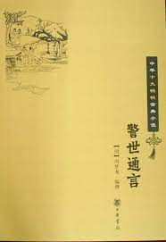

第十卷钱舍人题诗燕子楼#

烟花风景眼前休，此地仍传燕子楼。
鸳梦肯忘三月意？翠肇能省一生愁。
拓因零落难重舞，莲为单开不并头。
娇艳岂无黄壤痤？至今人过说风流。
话说大唐自政治大圣大孝皇帝溢法大宗开基之后，至十二帝宪宗登位，凡一百九十三年，天下无事日久，兵甲生尘，刑具不用。时有礼部尚书张建封做官年久，恐妨贤路，遂奏乞骸骨归田养老。宪宗曰：“卿年齿未衰，岂宜退位？果欲避冗辞繁，敕镇青徐数郡。”建封奏曰：“臣虽菲才，既蒙圣恩，白当竭力。”遂敕建封节制武宁军事，建封大喜。平昔爱才好客，既镇武宁，拣选才能之士，礼置门下。后房歌姬舞妓，非知书识礼者不用。武宁有妓关盼盼，乃徐方之绝色也。但见：
歌喉请亮，舞态霎姿。调弦成合格新声，品竹作出尘雅韵。琴弹古调，棋刃新图。赋诗琢句，追风雅见于篇中，溺管丹青，夺造化生于笔下。
建封虽闻其才色无双，缘到任之初，未暇召于搏阻之间。忽一日，中书舍人自乐天名居易，自长安宋，宣谕充剩，路过徐府，乃建封之故人也。喜乐天远来，遂置腐邀饮于公馆，只见：
幕卷流苏，帘垂朱箔。瑞脑烟喷宝鸭，香。光溢琼壶。果劈天浆，食烹异味。绪罗珠翠，列两行粉面梅妆；脆管繁音，奏一派新声雅韵：遍地舞捆铺蜀锦，当筵歌拍按红牙。
当时酒至数巡，食供两套，歌喉少歇，舞袖亦停，忽有一妓，抱胡琴立于筵前，转袖调弦，独奏一曲，纤手斜拈，轻敲慢按。满座清香消酒力，一庭雅韵爽烦漾。须臾弹彻韶音，抱胡琴侍立。建封与乐天俱喜调韵清雅，视其精神举止，但见花生丹脸，水剪双眸，意态天然，迥出伦辈。回视其余诸妓，粉黛如上。遂吁而问曰：“孰氏？”其妓斜抱胡琴，缓移莲步，向前对曰：“贱妾关盼盼也。”建封喜下白胜，笑谓乐天曰：“彭门乐事，不出于此。”乐天曰：“似此佳人，名达帝都，信非虚也！”建封曰：“诚如舍人之言，何惜一诗赠之？”乐天曰：“但恐句拙，反污丽人之美。”盼盼据卸胡琴，掩袂而言：“妾姿质丑陋，敢烦珠玉？若果不以猥贱见弃，是微躯随雅文不朽，岂胜身后之茉哉；”乐天喜其黠慧、遂口吟一绝：
凤拨金翎砌，檀槽后带垂。
醉娇无气力，风袅牡丹枝。
盼盼拜谢乐天曰：“贱妾之名，喜传于后世，皆舍人所赐也，”于是宾主欢治，尽醉而散。
翌日乐天车马东去。自此建封专宠盼盼，遂于府第之们，择佳地创建一楼，名曰“燕子楼”，使盼盼居之，建封治政之暇，轻车潜往，与盼盼宴饮；交飞玉耸，共理签簧，碑锦相偎，驾主共展，绔窗唱和，指花月为题，绣阎论情，对松笃为誓。歌笑管弦，情爱方浓。不幸彩云易散，皓月难圆。建封染病，盼盼请医调治，服药无效，间卜无灵，转加沉重而死。子孙护持灵枫，归葬北郎，独弃盼盼于燕子楼中。香消衣被，尘满琴筝，沉沉朱户长商，悄悄翠帘不卷。盼盼焚香指天誓曰：”妾妇人，无他计报尚书恩德，请落发为尼，诵佛经资公冥福，尽此一世，誓不再嫁／遂闭户独居，凡十换垦霜，人无见面者。乡党中有好事君子，慕其才貌，怜其孤劳，暗暗通书，以窥其意。盼盼为诗以代京答，前后积三百余首，编缀成隼，名曰《燕子楼集》，楼板流传于世。
忽一日，金风破暑，玉露生凉，雁字横空，镊声喧草。寂寥院字无人，静协于秋色。盼盼倚栏长叹，独言口：“我作之诗，皆诉愁苦，未知他人能晓我意否？”沉吟良久，忽想翰林白公必能察我，不若赋诗寄呈乐天，诉我衷肠，必表我不负张公之德。遂作诗三绝，缄封付老苍头，驰赴西洛，谓白公投下。白乐天得诗，启缄展视，其一曰：
北邮松柏锁愁烟，燕子楼人思悄然。
因埋冠剑歌尘散，红袖香消二十年。
其二曰：
适看鸿雁岳阳回，叉睹玄禽送社来。
瑶瑟玉萧无意绪，任从蛛网结成灰。
其三曰：
楼上残灯件晓霜，独眠人起合欢床。
桐思一夜知多少？地角天涯不是长！
乐天看毕，叹赏良久。意一妓女能守节操如此，岂可齐而不答？亦和三章以嘉其意，遣老苍头驰归。盼盼接得，折开视之，其一曰：
钢晕罗衫色似烟，一回看着一潜然。
自从不舞《霓裳曲》，叠在空箱得几年？
其二曰：
今朝有客洛阳回，曾到尚书家上来。
见说白杨堪作柱，争教红粉下成灰。
其三曰。
满帘明月满庭霜，被冷香销拂卧床。
燕子楼前清夜雨，秋来只为一人长。
盼盼吟玩久之，虽获驱珠和壁，未足比此诗之美。笑谓侍女曰：“自此之后，方表我一点真心。”正欲藏之筐中，见纸尾淡墨题小字数行，遂复展看，又有诗一首：
黄金不惜买蛾眉，拣得如花只一枝。
歌舞教成心力尽，一朝身死不相随。
盼盼一见此诗，愁锁双眉，泪盈满脸，悲泣哑咽，告侍女曰：“向日尚书身死，我恨不能自缢相随，恐人言张公有随死之妾，使尚书有好色之名，是法公之清德也。我今苟活以度朝昏，乐天下晓，故作诗相讽。我今不死，谤语未息。”遂和韵一章云：
独宿空楼敛恨眉，身如春后致残枝。
舍人不解人深意，讽道泉台不去随。
书罢掷笔于地，掩面长吁。久之，拭泪告侍女曰：“我无计报公厚德，惟坠楼一死，以表我心，”道罢，纤手紧窘绣袂，玉肌斜靠雕栏，有心报德酬恩，无意愉生苟活，下视高楼，踊跃奋身一跳。侍女急拽衣告曰：“何事自求横夭？”盼盼曰：“一片诚心，人不能表，不死何为？”侍女劝曰，“今损躯报德，此心虽佳，但粉骨碎身，于公何益？且遗老母，使何人侍养？”盼盼沉吟久之曰：“死既不能，惟诵佛经，祝公冥福。”自此之后，盼盼惟食素饭一盂，闭阁焚香，坐诵佛经。虽比屋未尝见面。久之鬓云懒掠，眉黛情描，倦理宝瑟瑶琴，厌对鸳亥凤枕，不施朱粉，似春归欲谢庐岭梅花；瘦损腰肢，如秋后消疏隋堤杨柳，每遇花辰月夕，感旧悲哀，寝食失常。不幸寝疾，伏枕月杀，速尔不起。老母遂卜吉葬于燕子楼后。
盼盼既死，不二十年问，而建封子孙，亦散荡消索。盼盼所居燕于楼遂为官司所占。其他近郡圃，出其形势改作花园，为郡将游赏之地。星霜屡改，岁月频迁，唐运告终，五代更伯。当周显德之未，天水真人承运而兴，整顿朝纲，经营礼法。顾视而妖氛寝灭，指挥而宇宙廓清。至皇宋二叶之时，四海无大吠之警，当时有中书舍人钱易，字希白，乃吴越工钱锣之后裔也。文行侍词，独步朝野，久住紫蔽，怠欲一历外任。遂困奏事之暇，上章奏曰：“臣久据词掖，无毫发之功，乞一小郡，庶竭驾骆广上曰：“青鲁地腴人善，卿可出镇彭门。”遂除希向节制武宁军，希白得旨谢恩。下车之日，宣扬皇化，整肃条章；访民瘦于井邑，享冤在于囹圄；屈己待人，亲拼劝农；宽仁惠爱，劝化凶顽，悉皆奉业守约，廉谨公平。听政月余，节届清明。既在暇日，了无一享，因独步东阶。天气乍暄，无可消遣，遂呼苍头前导，闲游圃中。但见。
晴光霉霄，淑景融融，小桃绽妆脸红深，嫩柳袅宫腰细软。幽亭雅彬，深藏花圃阴中，画肪兰侥，稳缆回塘岸下。驾金春光时时语，蝶弄睛光扰扰飞。
希自信步，深入芬芳，纵意游赏。到红紫丛中，忽有危楼飞槛，映远横主，基址孤高，规模壮丽。希白举目仰观，见画栋下有牌额，上书“燕子楼”三字。希白曰：“此张建封宠盼盼之处，岁月累更，谁谓遗踪尚在！”遂摄衣登梯，径上楼中，但见：
画栋栖云，雕梁耸汉，视四野如窥日下，指万里如睹掌中。遮风翠慕高张，蔽日疏帘低下。移踪但觉烟霄近，举目方知宇宙宽。
希白倚栏长叹言曰：“昔日张公清歌对酒，妙舞过宾，百岁既终，云消雨散，此事自古皆然，不足感叹。但惜盼盼本一娼妓，而能甘心就死，报建封厚遇之恩，虽烈丈夫何以加此！何事乐天诗中，犹讥其下随建封而死？实怜守节十余年，自洁之心，混没下传。我既知本末，若缄口下为褒扬，盼盼必抱怨于地下。”即呼苍头磨墨，希白染毫，作古调长篇，书于素屏之上，其词曰：
人生百岁能几日？茬首光阴如过隙。
槽中有酒不成欢，身后虚名又何益？
清河大守真奇伟，曾向春风种桃李。
欲将心事占韶华，无奈红颇随逝水。
佳人重义不顾生，感激深恩甘一死。
新侍寄语三百篇，贯串风骚洗沐耳。
请楼十二横霄汉，低下升帘锁双燕。
娇魂媚魄不可寻，尽把阑于空倚遍！
希白题罢，朗吟数过，忽有清风袭人，异香拂面。希内大惊，此非花气，自何而来？方疑讶问，见素屏后有步履之声。希白即转屏后窥之，见一女子，云浓时发，月淡修眉，体欺瑞雪之客光，脸夺奇花之艳丽，金莲步稳，束素腰轻。一见希白，娇羞脸黛，急挽金铺，平掩其身，虽江梅之映雪：不足比其风韵。希白惊讶，问其姓氏。此女舍金铺，掩袂向前，叙礼而言曰：“妾乃守园老吏之女也。偶因令节，闲上层楼，忽值公相到来，妾荒急匿身于此，以蔽丑恶。忽闻诵吊盼盼古调新词，使妾闻之，如获珠玉，送潜出听于索屏之后，因而得面台颜。妾之行藏，尽于此矣。”希白见女子容颜秀丽，词气清扬，喜悦之心，不可言喻，遂以言挑之曰：“听子议论，想必知音。我适来所作长篇，以为何如？”女曰：“妾门品虽微，酷喜吟咏，闻适来所诵篇章，锦心绣口，使九泉衔恨之心，一旦消释。”希白又闻此语，愈加喜悦曰：“今日相逢，可谓佳人才干，还有意无？”女乃款客正色，掩袂言曰：“幸君无及于乱，以全贞洁之心。惟有诗嘈，仰酬厚意。”遂于袖中取彩笺一幅上呈。希白展看其诗曰：
人去楼空事已深，至今惆怅禾天吟。
非君诗法高题起，谁慰黄泉一片心？
希白读罢，谓女子曰：“尔既能诗，决非园吏之女，果何人也？”女曰：“君详诗意，自知贱妾微踪，何必苦向广希内春心荡漾，不能拴束，向前拽其衣据，忽闻槛竹敲窗惊觉，乃一枕游仙梦，优枕于书窗之下，但见炉烟尚袅，花影微敬，院字沉沉，方当日午。希白推枕而起，兀坐沉思，“梦中所见者，必关盼盼也。何显然如是？千古所兀，诚为佳梦。”反复再二叹曰：“此事当作一词以记之。”遂成《蝶恋花》词，信笔书于案上，词曰：
一枕闲敬春昼午，梦入华臂，邂逅飞凉侣。娇态翠辇愁不语，彩笺遗我新奇句。凡许芳心犹未诉，风竹敲百，惊散无寻处！惆怅楚云留不住，断肠凝望高唐路。
呆迹未干，忽闻窗外有人鼓掌作拍，抗声而歌，调清韵美，声入帘忧。希白审听窗外歌声，乃适所作《蝶恋花》词也。希白大惊曰：“我方作此词，何人早已先能歌唱？”遂启窗视之，见一女子翠冠珠洱，玉佩罗裙，向苍苍太湖石畔，隐珊珊翠竹丛中，绣鞋不动芳尘，琼据风飘袅娜。希白仔细定睛看之，转柳寄花而大。希白呗异，不胜惆怅。后希白宫至尚书，惜军爱民，百姓赞仰，一夕无病而终，这是后活。正是。
一首新词吊丽容，贞魂含笑梦相逢。
虽为翰苑名贤事，编入稗官小之中。